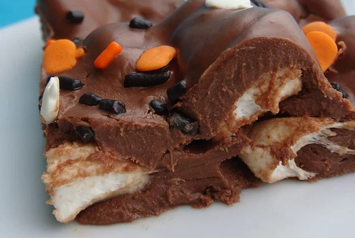

Rocky Road Fudge

This fudge has a Rocky Road spin to it. It has peanut butter and marshmellows.
Such a simple and easy recipe to satisfy any sweet tooth!
All you need is 3 things for this Rocky Road Fudge
Ingredients
- 2 cups of semi-sweet chocolate chips
- 1 cup of peanut butter
- 4 cups of mini marshmellows
Directions
- Grease a 9x9 pan
- Heat up the chocolate chips and peanut butter over low heat until chocolate chips are fully melted.
- Stir in marshmellows
- Pour into pan and cool in fridge or freeze.
And that's it! Hopefully you'll enjoy these as much as I do!
Return to recipes